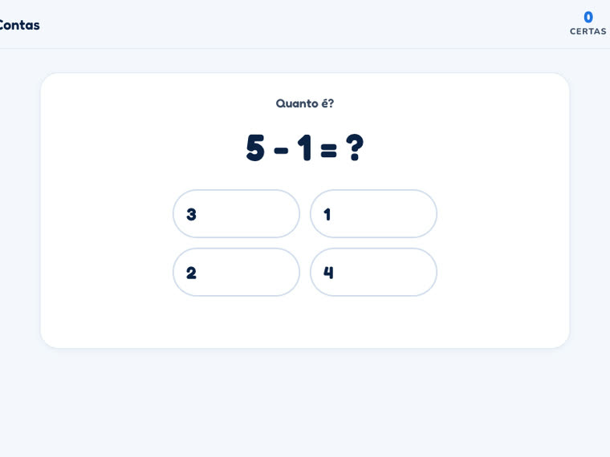
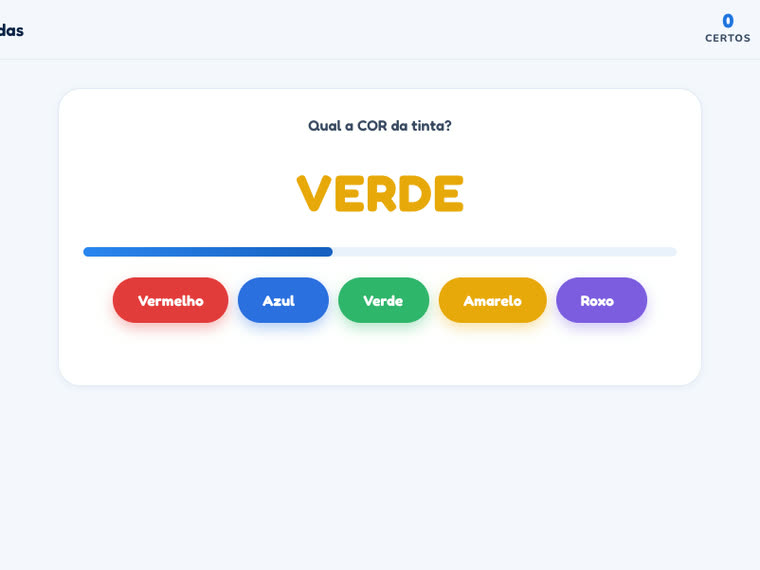
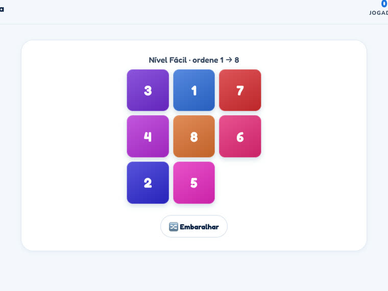
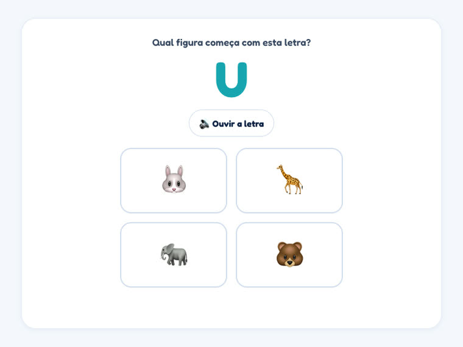
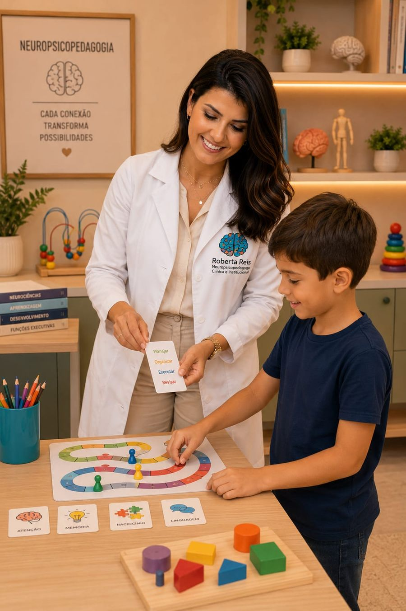

Jogos educacionais que treinam atenção, memória, funções executivas, linguagem e matemática — desenhados por faixa etária, com base clínica.
🔓 Demonstração com acesso livre — jogue tudo sem precisar assinar.
Cada jogo se ajusta ao estágio de desenvolvimento — do lúdico da alfabetização ao treino executivo do adulto.
Consciência fonológica, memória visual, contagem e controle do impulso — o alicerce da alfabetização, em forma de jogo.
Memória de trabalho, atenção seletiva, planejamento e linguagem — habilidades que sustentam o desempenho escolar.
Velocidade de processamento, flexibilidade cognitiva e cálculo — treino contínuo para a vida adulta e o envelhecimento saudável.
Cada jogo é marcado pelas funções que exercita — Roberta traduziu a avaliação neuropsicopedagógica em brincadeira.
Sustentada, seletiva e dividida — manter o foco, filtrar distrações e alternar tarefas.
De trabalho, visual e verbal — segurar e manipular informação enquanto se pensa.
Planejamento, controle inibitório, flexibilidade e resolução de problemas.
Consciência fonológica, leitura, escrita, compreensão e produção textual.
Raciocínio lógico, cálculo mental e resolução de problemas numéricos.
Percepção visual e auditiva, orientação espacial/temporal e coordenação fina.
Entre na plataforma e selecione a idade: 5–10, 11–17 ou 18+. Os jogos se ajustam sozinhos.
Toque num domínio (atenção, memória, linguagem…) ou deixe em "Todos" e escolha um jogo.
Cada jogo abre com as instruções dele, dá pontuação e feedback. Treinar vira rotina.
Uma amostra dos jogos — telas reais, é só tocar pra abrir na hora. E tem muito mais esperando dentro da plataforma.

🧒 5–10
🧑 11–17
🧒 5–10
🧒 5–10Entra na plataforma e joga tudo de graça nesta demonstração.

Sou Roberta Reis, neuropsicopedagoga e psicopedagoga em Juiz de Fora. No consultório, entendo como cada mente presta atenção, memoriza e dá sentido ao que aprende — de crianças na alfabetização a adultos mantendo o cérebro afiado.
Estes jogos são essa clínica virada brincadeira: peguei os mesmos domínios que avalio — atenção, memória, funções executivas, linguagem e matemática — e transformei em treino que não parece treino. Quem joga aqui está nas mãos de quem avalia de verdade.
Todos os planos dão acesso aos 11 jogos. A diferença está em quantos perfis e no acompanhamento.
Entre na plataforma e jogue todos os jogos gratuitamente nesta demonstração — depois escolha o plano que combina com a sua casa ou o seu consultório.
Criado pela neuropsicopedagoga Roberta Reis · Conheça o trabalho clínico →